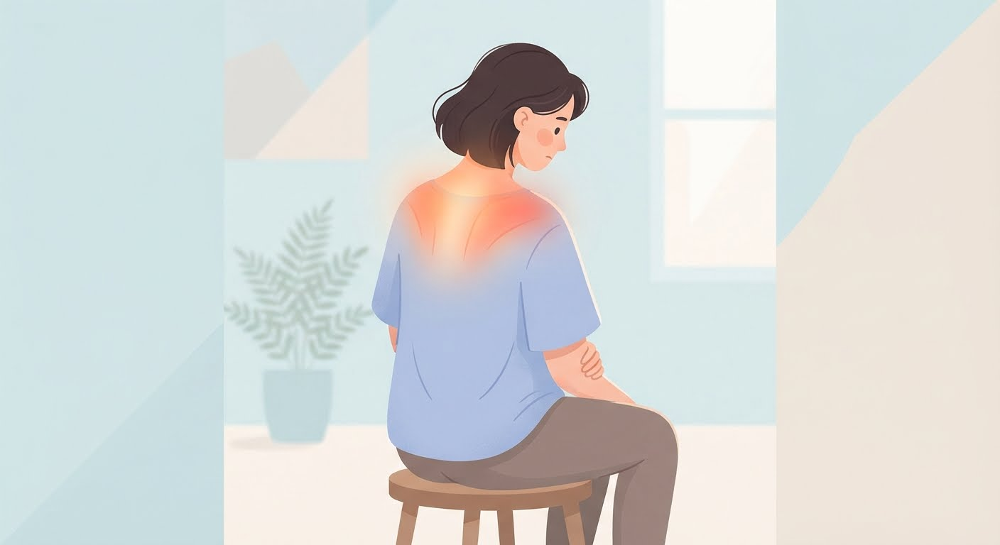
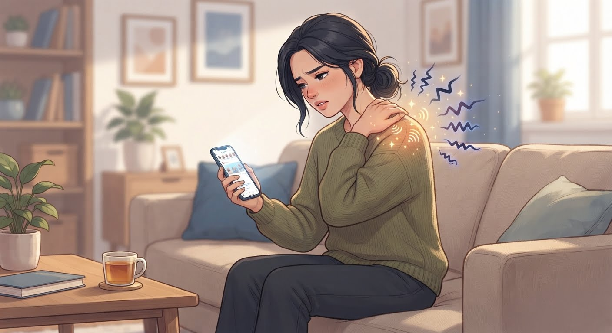
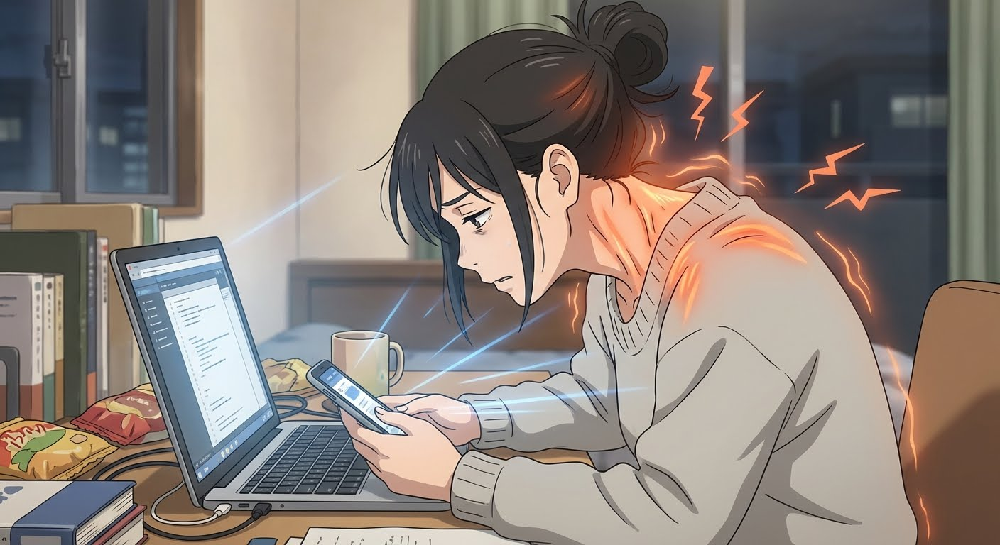
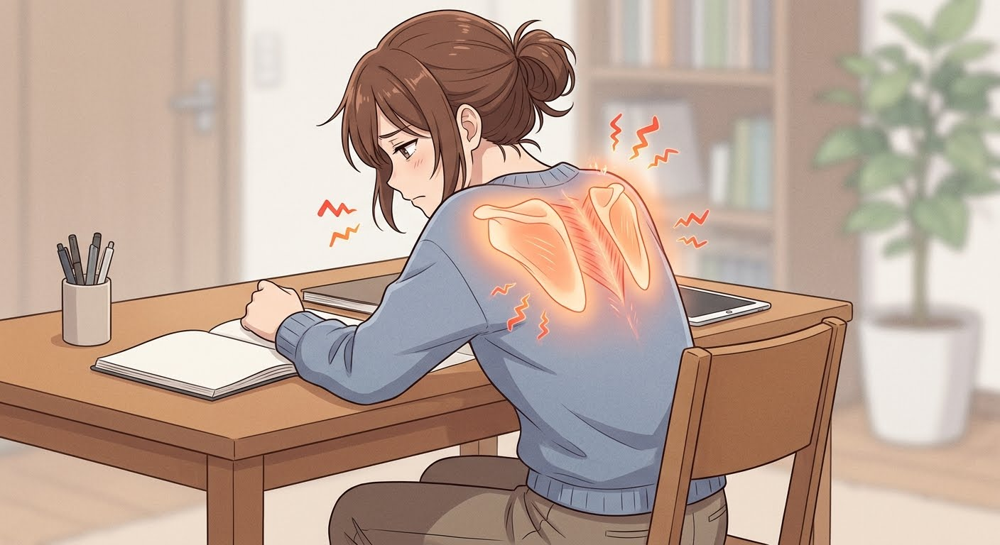
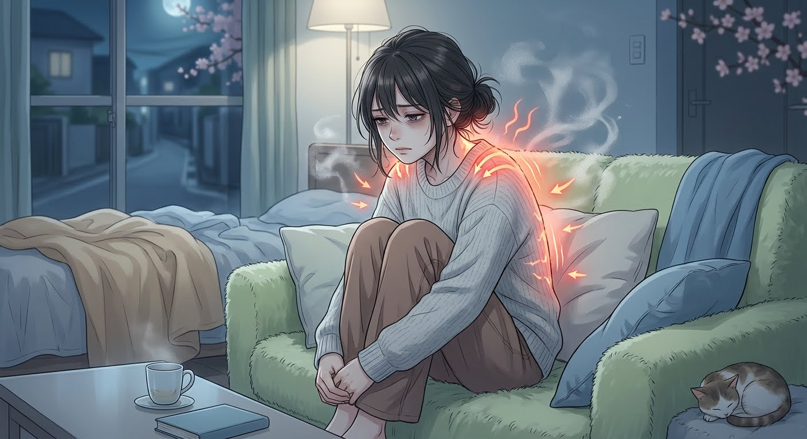
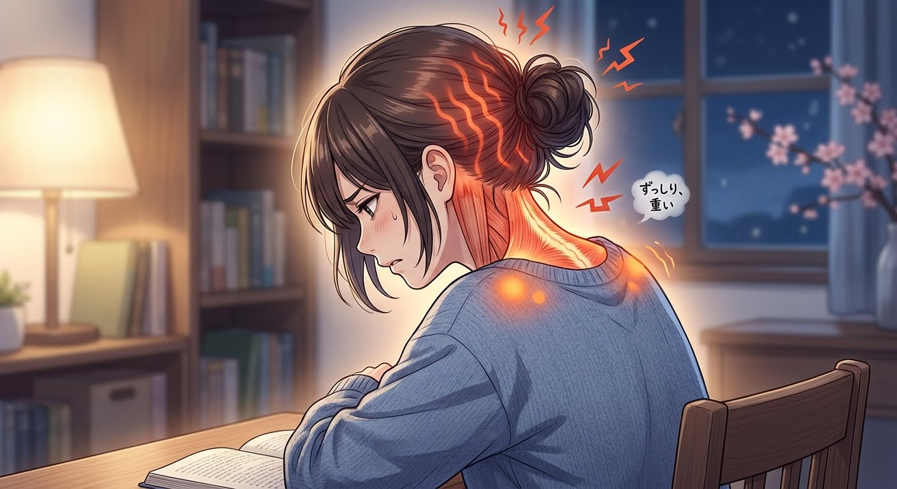
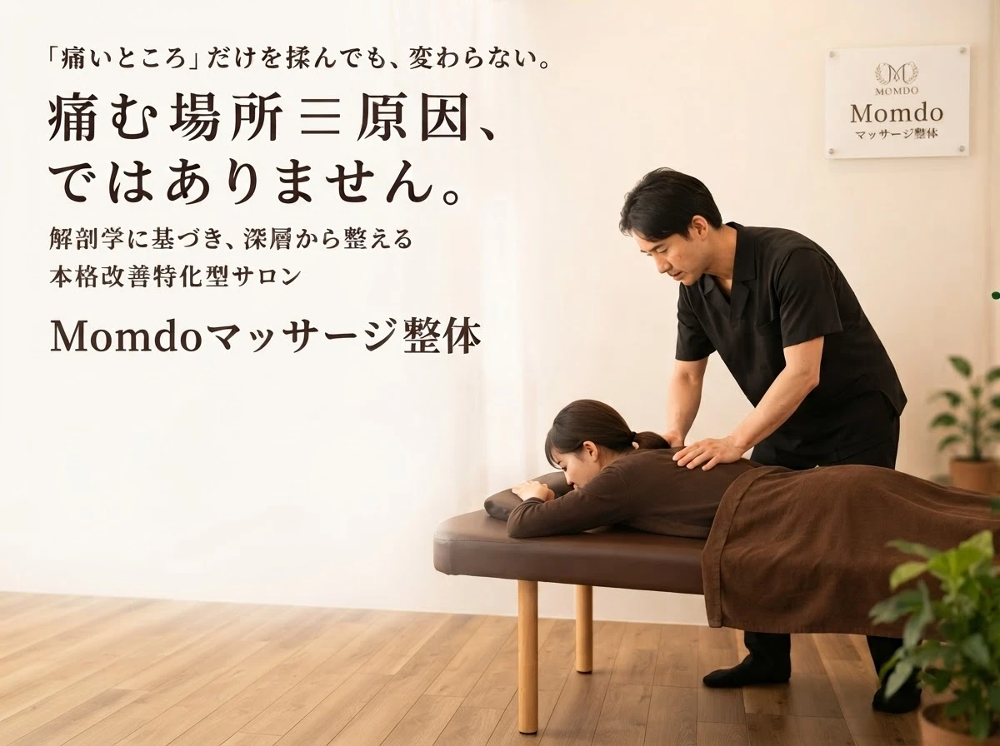

SHOULDER STIFFNESS
つらい肩こり
肩こりについて考える
長く同じ姿勢でいると肩こりがつらくなる。そんな肩こりは、肩の筋肉だけでなく、首・肩甲骨・胸郭・背中の動きや日々の姿勢が関係していることがあります。毎日の過ごし方と身体のつながりから、肩こりを見つめ直してみましょう。

CHECK YOUR SYMPTOMS
こんな肩こりのサインはありませんか？
肩こりの感じ方や、つらくなるタイミングは人によって異なります。

首のつけ根から肩にかけて、重さやだるさを感じる。

肩や背中の上部が張り、力が抜けにくく感じる。

パソコンやスマートフォンを使い続けると、肩がこわばる。

背中の上部や肩甲骨の内側に張りを感じる。

休息をとっても、肩こりが残るように感じる。

肩こりとともに、首すじや後頭部の重さを感じることがある。
WHY SHOULDERS FEEL STIFF
肩こりには、首・肩甲骨・胸郭などの状態も関係します。
頭を支える首、肩甲骨、胸郭、背中は互いに関係しながら、頭や腕を支えています。同じ姿勢が続くと、これらの部位の筋肉に負担がかかり、肩こりの不快感につながることがあります。
姿勢を保つために同じ筋肉を使い続けたり、身体を動かす機会が少なくなったりすると、筋肉の緊張や疲労を感じやすくなる場合があります。
肩こりを考えるときは、肩だけでなく、仕事中の姿勢や休憩の取り方、首や背中の動かしやすさにも目を向けてみましょう。
身体のつながりを簡略化したイメージ図です。実際の構造を正確な縮尺で示すものではありません。
BODY CONNECTIONS
肩こりを、身体のつながりから考える。
肩こりには、首や肩甲骨、胸郭、背中などの状態も関係していることがあります。

MOMDO APPROACH
肩だけに注目せず、身体全体から考える。
Momdoでは、肩こりが気になる場面や日常の過ごし方を伺い、 首・肩甲骨・胸郭・背中などの状態や姿勢にも目を向けます。
強い刺激を一方的に加えるのではなく、その日の状態やご希望を確認しながら、 無理のない施術を組み立てていきます。施術だけでなく、 日常で取り入れやすい姿勢や休憩の工夫も一緒に考えます。
肩こりに加えて強い痛みやしびれなどがある場合は、 まず医療機関にご相談ください。
BODY EXPLORER
首・肩甲骨と、身体のつながりをもっと詳しく。
首・肩甲骨・胸郭などの構造や、姿勢を保つ身体の連携を詳しく見ていきます。
WHEN TO SEEK MEDICAL CARE
つらい肩こり、
ひとりで抱え込まずご相談ください。
肩こりの不快感、日常生活で気になることを伺いながら、身体の状態に合わせた方法を一緒に考えます。
メニュー・料金を見るご予約・お問い合わせ福岡市城南区七隈｜金山駅徒歩2分